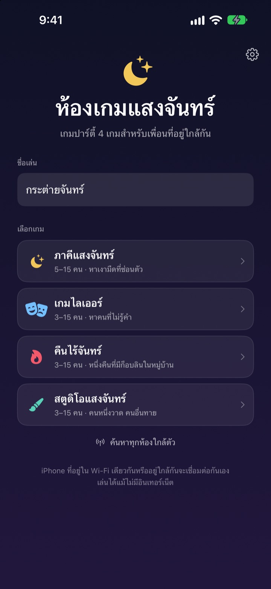
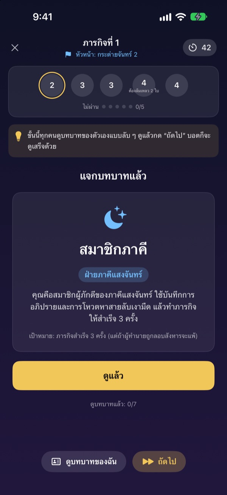
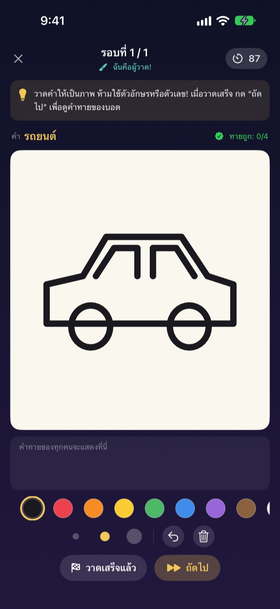
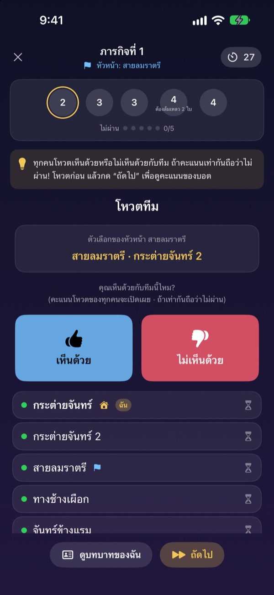

มากันครบแล้ว
หยิบ iPhone ขึ้นมาเลย
คนหนึ่งสร้างห้อง คนที่อยู่ใกล้ๆ ก็เข้าได้ในไม่กี่วินาที บทบาทและคำลับจะขึ้นเฉพาะบนจอของแต่ละคน ไม่ต้องใช้การ์ด และไม่ต้องมีใครนั่งเป็นผู้ดำเนินเกม
ทุกเกมเล่นฟรี ไม่ต้องมีบัญชี ไม่ต้องใช้เน็ต

ลองเล่นเกมไลเออร์หนึ่งตา
นึกภาพว่ามี iPhone ห้าเครื่องวางอยู่บนโต๊ะ แล้วแตะดูทีละเครื่อง มีแค่คนเดียวที่ไม่รู้คำ จะส่งจอวนกันเล่นกับเพื่อนก็ได้
คนมาเยอะ แต่ไม่รู้จะเล่นอะไรดี
ปาร์ตี้ที่บ้าน ทริปต่างจังหวัด รวมญาติช่วงเทศกาล จะเล่นเกมหาตัวตนลับก็ต้องมีคนหนึ่งออกมาเป็นผู้ดำเนินเกม กระดาษพับก็แอบเห็นกันได้ ที่พักไหนไวไฟอ่อน เกมออนไลน์ก็เล่นไม่ได้ ห้องเกมแสงจันทร์ให้ iPhone ทำหน้าที่ดำเนินเกม แจกบทบาท และเชื่อมต่อกันเอง
บทบาทของคุณอยู่แค่บนจอคุณ
พอเริ่มเกม iPhone แต่ละเครื่องจะได้รับบทบาทหรือคำของตัวเอง ไม่ต้องแจกการ์ด ไม่ต้องให้ทุกคนหลับตา
ตอนโหวตจะเห็นแค่ว่าใครโหวตแล้ว ส่วนใครโหวตใครจะเป็นความลับจนถึงตอนเฉลย

สี่เกม เข้ากับทุกวง
เกมไลเออร์วัดกันที่ฝีปาก ภาคีแสงจันทร์ใช้ภารกิจและการโหวตตามหาเงามืด คืนไร้จันทร์ต้องหาก็อบลินให้เจอในคืนเดียว และสตูดิโอแสงจันทร์ให้คนหนึ่งวาด ที่เหลือทาย
ภาคีแสงจันทร์เริ่มที่ 5 คน เกมอื่นเริ่มที่ 3 คน และเล่นได้สูงสุด 15 คนทุกเกม

เกมใหม่ก็เรียนรู้ได้ในไม่กี่นาที
ทุกเกมมีโหมดวิธีเล่น ให้คุณเล่นกับบอตไปทีละขั้น อ่านคำแนะนำด้านบนแล้วแตะ ถัดไป
ถ้าแอปปิดไปหรือการเชื่อมต่อหลุด แตะ เล่นต่อ ที่หน้าแรกก็กลับเข้าตาเดิมได้ทันที

เริ่มได้ใน 3 ขั้นตอน
- 1
ตั้งชื่อเล่นและเลือกเกม
ทุกคนเปิดแอป ใส่ชื่อเล่น แล้วเลือกเกม
- 2
สร้างหรือเข้าห้อง
คนหนึ่งสร้างห้อง คนอื่นเข้าผ่าน ค้นหาห้องใกล้ตัว
- 3
โฮสต์กดเริ่ม
เมื่อทุกคนเข้าครบ โฮสต์แตะ เริ่มเกม ที่เหลือแอปจัดการให้
สี่เกมในแอป
- เกมไลเออร์ · 3–15 คน
- ทุกคนได้คำเดียวกัน ยกเว้นคนเดียว ผลัดกันอธิบายคำ แล้วโหวตหาไลเออร์ ถ้าไลเออร์ถูกจับได้แต่ทายคำถูก ไลเออร์ก็ยังชนะ
- ภาคีแสงจันทร์ · 5–15 คน
- ตามหาเงามืดที่แฝงตัวอยู่ในภาคี หัวหน้าเลือกทีมภารกิจ ทุกคนโหวตเห็นด้วยหรือไม่เห็นด้วย แล้วทีมจะลงการ์ดสำเร็จหรือล้มเหลวแบบลับๆ ฝ่ายที่ได้สามภารกิจก่อนเป็นฝ่ายชนะ
- คืนไร้จันทร์ · 3–15 คน
- คืนเดียวที่มีก็อบลินแฝงตัวอยู่ในหมู่บ้าน ตอนกลางคืน หมอผี โจรราตรี และจอมซนจะลงมือแบบลับๆ พอฟ้าสางก็ถกกัน แล้วมีโหวตแค่ครั้งเดียวเพื่อหาก็อบลิน
- สตูดิโอแสงจันทร์ · 3–15 คน
- คนหนึ่งวาดคำ คนอื่นทายในแชต ยิ่งทายถูกเร็วยิ่งได้คะแนนมาก และคนวาดได้คะแนนทุกครั้งที่มีคนทายถูก
ทุกเกมลองเล่นคนเดียวกับบอตก่อนได้ในโหมดวิธีเล่น
คำถามที่พบบ่อย
หาห้องไม่เจอ
ตรวจสอบว่าโฮสต์และผู้เล่นต่อ Wi-Fi เดียวกันหรืออยู่ใกล้กัน ต้องเปิดห้องเกมแสงจันทร์ไว้ใน การตั้งค่า ▸ ความเป็นส่วนตัวและความปลอดภัย ▸ เครือข่ายเฉพาะที่ จึงจะหาอุปกรณ์ใกล้ๆ เจอ เปิดทั้ง Wi-Fi และบลูทูธไว้จะเชื่อมต่อได้เสถียรที่สุด
ต้องอนุญาตการเข้าถึงเครือข่ายเฉพาะที่ไหม
ต้องอนุญาต แอปใช้สิ่งนี้หาและเชื่อมต่อกับ iPhone ที่อยู่ใกล้ๆ ถ้าเผลอกดไม่อนุญาต เปิดใหม่ได้ที่ การตั้งค่า ▸ ความเป็นส่วนตัวและความปลอดภัย ▸ เครือข่ายเฉพาะที่
การเชื่อมต่อหลุดระหว่างเล่น
เปิดแอปอีกครั้งแล้วแตะ เล่นต่อ ที่หน้าแรก ก็จะกลับเข้าห้องเดิมและตาเดิม บทบาทและคะแนนยังอยู่ครบ ถ้านานแล้วยังเชื่อมต่อไม่ได้ ให้เข้าใหม่จากรายการห้อง
มีคนไม่ตอบสนอง เกมค้าง
โฮสต์เชิญผู้เล่นที่ไม่ตอบสนองออกได้ทุกเมื่อ เกมจะนับผลใหม่จากคนที่เหลือแล้วเล่นต่อ ในโหมดโฮสต์ GM ยังข้ามขั้นที่ค้างได้ด้วย
ต้องมีอย่างน้อยกี่คน
ภาคีแสงจันทร์ต้องมี 5 คน เกมไลเออร์ คืนไร้จันทร์ และสตูดิโอแสงจันทร์เริ่มได้ที่ 3 คน ทุกเกมเล่นได้สูงสุด 15 คน คนไม่พอก็ลองเรียนกติกากับบอตในโหมดวิธีเล่นไปก่อน
ต้องใช้เน็ตหรือบัญชีไหม
ไม่ต้อง ไม่ต้องสมัคร ไม่ต้องล็อกอิน ไม่ต้องใช้เน็ต iPhone ที่อยู่ใกล้กันเชื่อมต่อกันโดยตรง และข้อมูลเกมไม่ถูกส่งไปเซิร์ฟเวอร์
ลองเล่นคนเดียวก่อนได้ไหม
ได้ เลือกเกมแล้วเลือก วิธีเล่น (ฝึกกับบอต) บอตจะเข้ามาในห้อง แล้วคุณจะได้เล่นครบหนึ่งตาไปทีละขั้น
จะแจ้งปัญหาหรือเสนอไอเดียได้ที่ไหน
ส่งจากในแอปได้เลยที่ การตั้งค่า (รูปเฟือง) ▸ ช่วยเหลือ หรือส่งอีเมลมาที่อยู่ด้านล่าง เราจะตอบกลับให้เร็วที่สุด
แจ้งปัญหา เสนอไอเดีย หรือสอบถามอื่นๆ ส่งอีเมลมาที่ mizzking75@gmail.com